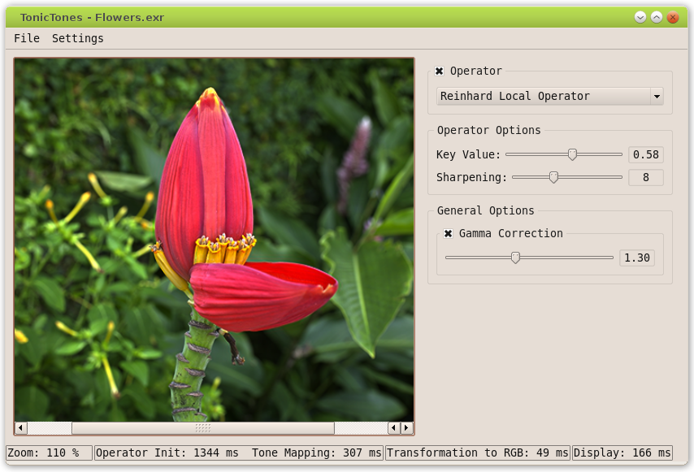

Introduction:
- This is the TonicTones documentation. TonicTones is a tone mapping application developped in C++ using extensively Qt.
Structure:
- The application is composed of a core and several plugins. There are two types of plugins, image loaders and tone mapping operators.
Image Loaders:
- Image loaders are used to read image files. Each image loader can handle one or more image formats. When loading an image, an image loader manager choses a specific loader according to the file extension.
- There are currently two image loaders:
Tone Mapping Operators:
- Tone mapping operators do the actual job of tone mapping. Each tone mapping operator can have its own user interface which is integrated to the main user interface when the operator is selected. A tone mapping operator manager keeps a list of available operators and an instance of the active operator.
- There are currently two operators:
These two operators are based on Erik Reinhard's work : http://www.cs.utah.edu/~reinhard/cdrom/.
Licence:
- This software and its documentation is released under the terms of the GNU General Public License as published by the Free Software Foundation; either version 2 of the License, or (at your option) any later version.
- Author:
- Jérémy Laumon

 1.7.2
1.7.2